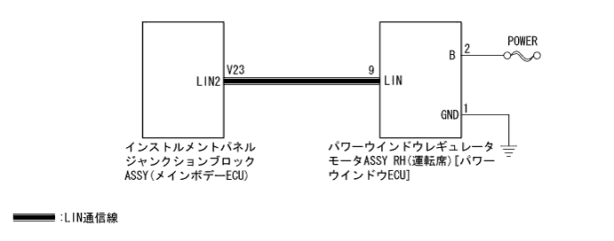
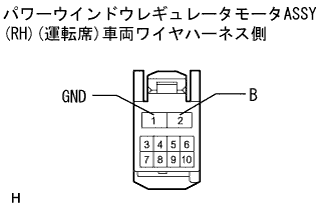
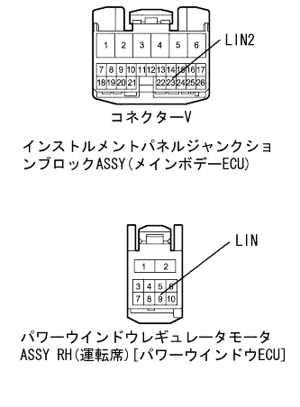

DTC B2321 D Seat Motor ECU not Connected |
| DTC No. | DTC Detection Condition | Inspection Area |
|---|---|---|
| B2321 | Communication malfunction between the power window regulator motor assembly RH (driver side) [power window ECU] and the instrument panel junction block assembly (main body ECU) (communication interrupted for 10 seconds or more) and communication line malfunction |
|

| Step 1 | Clear DTC |
Using SST (TaSCAN), clear the DTCs. (see)
| NEXT | |
| Step 2 | Check DTC |
Using SST (TaSCAN), check the DTCs. (see)
| Result | Proceed to |
|---|---|
| DTC B2321 is output again | A |
| DTC B2321 is not output again | B |
|
| ||||
| A | |
| Step 3 | Inspect Fuse |
Using SST (Toyota electrical tester), measure the resistance of the fuse.
| Inspection Fuse | Condition | Standard |
|---|---|---|
| POWER fuse | Always | Below 1 Ω |
|
| ||||
| OK | |
| Step 4 | Inspect Wire Harness or Connector (Power Source and Ground) |
 |
Disconnect the power window regulator motor assembly RH (driver side) [power window ECU] connector.
Using SST (Toyota electrical tester), measure the voltage of the vehicle side wire harness connector terminal.
| Tester Connection (Terminal Symbol) | Condition | Standard |
|---|---|---|
| 2 (B) - Body ground | Always | 11 to 14V |
Using SST (Toyota electrical tester), measure the resistance of the vehicle side wire harness connector terminal.
| Tester Connection (Terminal Symbol) | Condition | Standard |
|---|---|---|
| 1 (GND) - Body ground | Always | Below 1 Ω |
|
| ||||
| OK | |
| Step 5 | Inspect Wire Harness or Connector (Instrument Panel Junction Block Assembly - Power Window Regulator Motor Assembly RH) |
 |
Disconnect the instrument panel junction block assembly (main body ECU) and power window regulator motor assembly RH (driver side) [power window ECU] connectors.
Using SST (Toyota electrical tester), measure the resistance between the terminals of the vehicle side wire harness connector.
| Inspection terminals (terminal symbols) (Main body ECU - Power window ECU) | Condition | Standard |
|---|---|---|
| V23(LIN2) - 9(LIN) | Always | Below 1 Ω |
| Inspection terminals (terminal symbols) (Main body ECU) | Condition | Standard |
|---|---|---|
| V23 (LIN2) - Body ground | Always | 10k Ω or higher |
|
| ||||
| OK | |
| Step 6 | Replace with Known Good Driver Side Power Window ECU |
Replace the power window regulator motor assembly RH (driver side) [power window ECU] with a known good one. (see)
Using SST (TaSCAN), clear the DTCs. (see)
| NEXT | |
| Step 7 | Recheck DTC |
Using SST (TaSCAN), check the DTCs again. (see)
| Result | Proceed to |
|---|---|
| DTC B2321 is not output again | A |
| DTC B2321 is output again | B |
|
| ||||
| A | ||
| ||